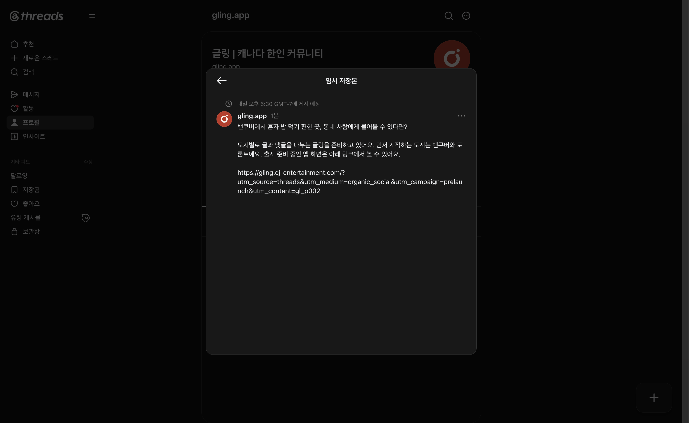

Threads 첫 글 예약 완료
2026-09-09 · Git → gling · @gling.app. 사용자 지시: “이제 글 예약해봐야지?”
9월 10일 밴쿠버 18:30 / 토론토 21:30에 GL-P002를 네이티브 예약했다. 공개 발행은 아직이다.
저장한 글
밴쿠버에서 혼자 밥 먹기 편한 곳, 동네 사람에게 물어볼 수 있다면?
도시별로 글과 댓글을 나누는 글링을 준비하고 있어요. 먼저 시작하는 도시는 밴쿠버와 토론토예요. 출시 준비 중인 앱 화면은 아래 링크에서 볼 수 있어요.
https://gling.ej-entertainment.com/?utm_source=threads&utm_medium=organic_social&utm_campaign=prelaunch&utm_content=gl_p002
Patina 최종 출력 250자와 입력 화면의 본문·줄바꿈을 대조했다. 기존 GL-L001 B 첫 문장을 유지했고, 검증 재시도 뒤 MPS 100 / fidelity 100으로 통과했다. 이는 편집 검사 결과이며 성과 판정은 아니다.
실제 확인
- 저장 전 공개 글 없음과 비어 있는 임시 저장본 목록 확인.
- 글링 소개 페이지에 UTM을 포함해 접속하고 앱 화면·출시 준비 상태 확인.
- 작성자 gling.app, 브라우저 America/Vancouver, 9/10 날짜와 18:30 GMT-7 대조.
- 예약 접수 후 새 작성 창의 임시 저장본을 다시 열어 한 건의 본문과 시간을 확인.
- 플랫폼 UI에 개별 예약 ID/URL이 없어 프로필의 임시 저장본 경로·본문·시각과 화면 증거로 식별한다.
예약 관측 기록 · 화면 텍스트 · 최종 원고 · Patina 로그

남은 단계와 다음 관측
- Instagram GL-P001은 소재 제작과 클릭 가능한 프로필 링크가 미완료다. Business Suite에 Instagram으로 로그인하는 공식 경로를 열었으나 gling.app 승인 팝업에서 Orca의 window_not_focused 오류로 멈췄다. 광고나 타 계정 연결은 실행하지 않았다.
- 글링 반복 자동화는 아직 생성하지 않았다. 이번 완료 범위는 Threads 한 건의 플랫폼 예약이다.
- 예정 시각 이후 공개 글과 URL을 먼저 확인한다. 24시간(9/11 18:30 Vancouver)·72시간·7일 이후 첫 관측에서 조회/도달·반응·클릭을 확인하고 원본 지표를 남긴다. 현재 클릭·문의·첫 사용·재사용·지불은 미관측이며 0으로 기록하지 않는다.
- 다음 글 GL-P004는 기존 대화형 초안을 Patina로 처리하고, 첫 글의 실제 댓글이 생기면 확인한 질문을 반영한다. 댓글 부재만으로 원고 실패를 판정하지 않는다. 이번 원고 가설은 구체적인 동네 질문으로 글링의 용도를 전달할 수 있는지 탐색하는 것이며 승자 판정 전이다.
작업 중 교정
처음 일반 입력에서 줄바꿈이 사라지고 후속 입력이 덧붙는 것을 검증에서 발견했다. 잘못된 작성 중 원고는 저장하지 않고 폐기한 뒤, 빈 작성창에 붙여넣기 이벤트로 최종 원고를 한 번 입력해 정확한 일치를 확인했다. 예약 제출은 교정 완료 후 한 번만 했다.